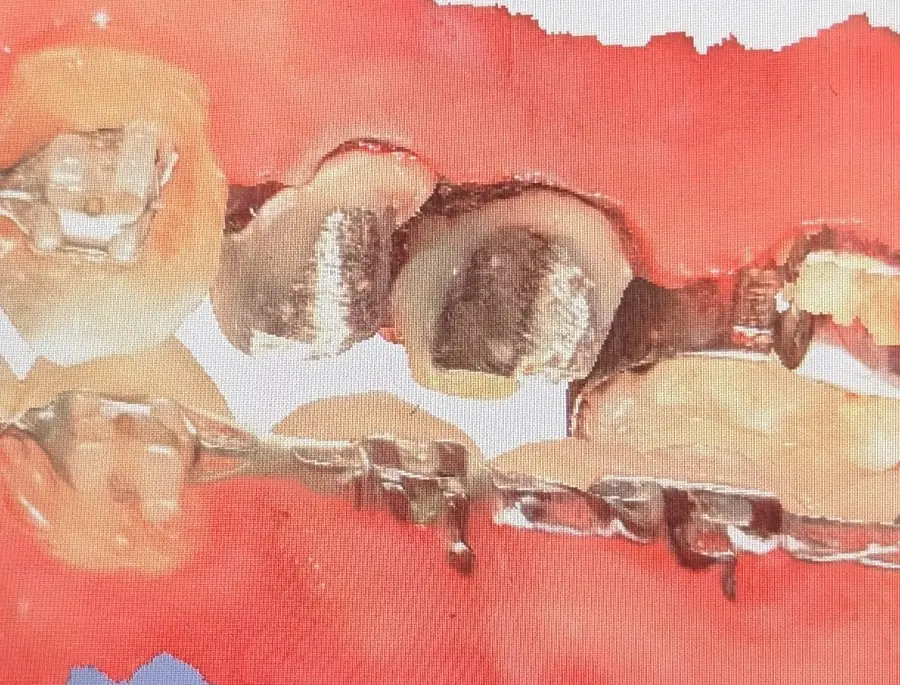

نسخه استخراجشده؛ ترجمه یا تأیید علمی انجام نشده است. وضعیت: captured
بیمار تحت درمان ارتودنسی است و در میانهی مسیر نیاز به روکش پیدا کرده. تصمیم دیگر صرفاً یک انتخاب پروتزی نیست: روکش وارد یک اکوسیستم درمانی فعال میشود که در آن نیروها، باندینگ، رنگ و زمان همگی در حال تغییرند.

اگر قرار است روی روکش براکت سمان شود، جنس روکش باید طوری انتخاب شود که اچ، سیلانکاری و باندینگ روی آن قابل اعتماد باشد.
سمان کردن براکت روی روکش یعنی روکش وارد چرخهای میشود از اچ، باند، دیباند، تمیزکاری رزینهای باقیمانده و در نهایت پالیش. هر کدام از این مراحل سطح روکش را، هرچند کم، تغییر میدهد.
بیمار باید از قبل بداند روکشش در پایان درمان ارتو دقیقاً همان روکشی نیست که اول کار گذاشته شده.
به همین دلیل، در بسیاری از موارد ترجیح بالینی این است که روکش موقت در طول درمان ارتو حفظ شود و روکش دائم به بعد از اتمام ارتو موکول شود.
این انتخاب بدون تنش نیست. متخصص ارتو ممکن است با روکش موقت موافق نباشد، چون موقتها زیر نیروهای ارتودنسی، که نیروهای مداوم و جهتدارند، مستعد جدا شدن مکررند. هر بار افتادن یعنی یک وقفه در درمان و یک ریسک برای دندان زیرین.
پس روکش موقت نه یک راهحل ناقص، بلکه یک انتخاب استراتژیک است: فضای زمانی لازم را فراهم میکند تا درمان ارتو تمام شود، دندانها به موقعیت نهایی برسند، رنگ واقعی آشکار شود و آنگاه روکش دائم با اطلاعات کامل و در یک میدان کاری پایدار ساخته شود.
روکش روی دندان تحت درمان ارتو تصمیمی است در تقاطع سه متغیر: جنس و قابلیت باندینگ سطح روکش، تحمل آن در برابر نیروهای ارتودنسی، و ناپایداری مرجع رنگی در طول درمان. در بسیاری از موارد انتخاب درست نه روکش دائم زودهنگام، بلکه یک روکش موقت قابل اعتماد است که تا پایان ارتو دوام بیاورد.